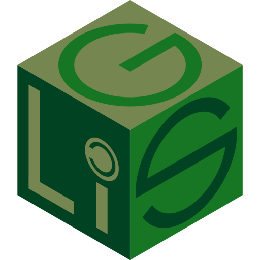

Storie di successo del software libero
Incontri GLIS 2026 —
Leonardo Robol

### Il software è facile da diffondere
Al contrario di un'automobile, **riprodurre** il software non
costa nulla; se sviluppo un software utile:
* *Chiunque* ne può beneficiare;
* Altri possono *migliorarlo*, e io ne guadagnerò.
**Domanda**: è davvero un modello sostenibile?
## Alcune storie di successo
Obiettivo di oggi: conoscere alcune storie di software libero,
che magari usiamo anche tutti i giorni senza saperlo.
### \#1: GNU Project
* Alla fine degli anni '70, **Richard Stallman** lavora in un
laboratorio del MIT;
* Un giorno, ha dei problemi con la **stampante**;
* Decide di **modificarne il software** per avvisare quando si inceppa.
Il produttore **non fornisce il codice sorgente**: Stallman non può risolvere il problema.
I sistemi operativi nel 1980: Unix
 ### GNU e Free Software Foundation
RMS decide di risolvere il problema alla base:
* Crea il **progetto GNU** nel 1983 (GNU is Not Unix);
* Obiettivo: creare un'alternativa libera a **Unix**;
* Fonda la **Free Software Foudation** (FSF) nel 1985.
 
### ... ha funzionato?
* La FSF è **attiva** ancora oggi;
* Ha creato le **licenze** più usate per il software libero;
* Ha cambiato la cultura del software.
**Pubblicità **: Parleremo di licenze anche nel prossimo incontro,
con Alessandro e Giuseppe.
### ... e il sistema operativo GNU?
Vengono sviluppati molti software per GNU:
* Compilatori: **GCC** (GNU Compiler Collection);
* Editor di testo: **Emacs**;
* Shell: **Bash**;
Nel 1990, il progetto GNU è quasi completo:
mancano solo il **kernel** e il **file system**.
### GNU Hurd
* Il kernel sviluppato per GNU si chiama **Hurd**;
* È un progetto tecnicamente molto raffinato ed avanzato (**microkernel**);
* Viene sviluppato a partire dal 1990, ma è ancora **incompleto**;
* Non è **mai stato completato**, o usato in produzione.
### \#2: Linux
Nel 1991, **Linus Torvalds** è un giovane studente finlandese di informatica;
* Il corso sistemi operativi usa **Minix**:
una versione di Unix pensata a scopo **didattico**;
* È **proprietario**: codice sorgente disponibile,
ma non modificabile o ridistribuibile;
### Un post su Usenet

### Nasce Linux
* Nei mesi seguenti il kernel viene sviluppato;
* Altri si uniscono al progetto, suggeriscono idee,
e contribuiscono codice;
* È il pezzo mancante per GNU: nasce **GNU/Linux**.
### Le distribuzioni Linux
* Nascono le **distribuzioni**: Linux viene combinato con GNU e altri software
per creare dei sistemi completi.
* Linux è usato da milioni di persone; è alla base di **Android**,
il sistema operativo più usato al mondo;
* È usato in **supercomputer**, **server**, **TV**, **infotainment**, e sistemi
**domotici**.
### GNU/Linux
* Linux non sarebbe stato possibile senza GNU;
* GNU non sarebbe utile senza Linux.
È un esempio di come il software libero possa essere un **bene comune**: ognuno
aggiunge qualcosa, e tutti ne beneficiano.
### Licenze libere
* Linux è rilasciato sotto la **GPL** (GNU General Public License);
* La GPL è una licenza **copyleft**: chiunque può
ridistribuire il software, ma deve farlo con la stessa licenza.
* Altre licenze libere: **MIT**, **BSD**, **Apache**, ...
Per essere libera, una licenza deve garantire le libertà di
**usare**, **modificare**, e **ridistribuire** il software.
Non è sufficiente che il codice sorgente sia disponibile.
### Lo sviluppo di Linux
* Dal 1991, Linus Torvalds guida lo sviluppo di Linux;
* Oggi è sviluppato da migliaia di persone;
* Grandi aziende partecipano: Google, Facebook (Meta), AMD, Intel, Oracle, NVIDIA, ...
L'uso di una licenze GPL ha **forzato molte aziende** a pubblicare
i loro driver
(vedi AMD, Intel, in qualche forma anche NVIDIA).
### \#3: Wikipedia
* Nel 2001, **Jimmy Wales** e **Larry Sanger** creano Wikipedia:
una **enciclopedia online**, scritta da volontari;
* È rilasciata sotto la licenza **Creative Commons Attribution-ShareAlike** (CC BY-SA);
* Oggi è il sito più visitato al mondo dopo Google.
### \#4: Arduino
Il progetto nasce nel 2003, da una necessità alla
**Interaction Design Institute Ivrea** in Italia:
* Serviva un modo facile per realizzare prototipi di dispositivi interattivi;
* I microcontrollori esistenti erano troppo costosi o difficili da usare.
### Programmazione di microcontrollori
* Anche la **programmazione non è banale**: serve conoscere
bene l'hardware.
* La domanda di Banzi & Co.
### GNU e Free Software Foundation
RMS decide di risolvere il problema alla base:
* Crea il **progetto GNU** nel 1983 (GNU is Not Unix);
* Obiettivo: creare un'alternativa libera a **Unix**;
* Fonda la **Free Software Foudation** (FSF) nel 1985.
 
### ... ha funzionato?
* La FSF è **attiva** ancora oggi;
* Ha creato le **licenze** più usate per il software libero;
* Ha cambiato la cultura del software.
**Pubblicità **: Parleremo di licenze anche nel prossimo incontro,
con Alessandro e Giuseppe.
### ... e il sistema operativo GNU?
Vengono sviluppati molti software per GNU:
* Compilatori: **GCC** (GNU Compiler Collection);
* Editor di testo: **Emacs**;
* Shell: **Bash**;
Nel 1990, il progetto GNU è quasi completo:
mancano solo il **kernel** e il **file system**.
### GNU Hurd
* Il kernel sviluppato per GNU si chiama **Hurd**;
* È un progetto tecnicamente molto raffinato ed avanzato (**microkernel**);
* Viene sviluppato a partire dal 1990, ma è ancora **incompleto**;
* Non è **mai stato completato**, o usato in produzione.
### \#2: Linux
Nel 1991, **Linus Torvalds** è un giovane studente finlandese di informatica;
* Il corso sistemi operativi usa **Minix**:
una versione di Unix pensata a scopo **didattico**;
* È **proprietario**: codice sorgente disponibile,
ma non modificabile o ridistribuibile;
### Un post su Usenet

### Nasce Linux
* Nei mesi seguenti il kernel viene sviluppato;
* Altri si uniscono al progetto, suggeriscono idee,
e contribuiscono codice;
* È il pezzo mancante per GNU: nasce **GNU/Linux**.
### Le distribuzioni Linux
* Nascono le **distribuzioni**: Linux viene combinato con GNU e altri software
per creare dei sistemi completi.
* Linux è usato da milioni di persone; è alla base di **Android**,
il sistema operativo più usato al mondo;
* È usato in **supercomputer**, **server**, **TV**, **infotainment**, e sistemi
**domotici**.
### GNU/Linux
* Linux non sarebbe stato possibile senza GNU;
* GNU non sarebbe utile senza Linux.
È un esempio di come il software libero possa essere un **bene comune**: ognuno
aggiunge qualcosa, e tutti ne beneficiano.
### Licenze libere
* Linux è rilasciato sotto la **GPL** (GNU General Public License);
* La GPL è una licenza **copyleft**: chiunque può
ridistribuire il software, ma deve farlo con la stessa licenza.
* Altre licenze libere: **MIT**, **BSD**, **Apache**, ...
Per essere libera, una licenza deve garantire le libertà di
**usare**, **modificare**, e **ridistribuire** il software.
Non è sufficiente che il codice sorgente sia disponibile.
### Lo sviluppo di Linux
* Dal 1991, Linus Torvalds guida lo sviluppo di Linux;
* Oggi è sviluppato da migliaia di persone;
* Grandi aziende partecipano: Google, Facebook (Meta), AMD, Intel, Oracle, NVIDIA, ...
L'uso di una licenze GPL ha **forzato molte aziende** a pubblicare
i loro driver
(vedi AMD, Intel, in qualche forma anche NVIDIA).
### \#3: Wikipedia
* Nel 2001, **Jimmy Wales** e **Larry Sanger** creano Wikipedia:
una **enciclopedia online**, scritta da volontari;
* È rilasciata sotto la licenza **Creative Commons Attribution-ShareAlike** (CC BY-SA);
* Oggi è il sito più visitato al mondo dopo Google.
### \#4: Arduino
Il progetto nasce nel 2003, da una necessità alla
**Interaction Design Institute Ivrea** in Italia:
* Serviva un modo facile per realizzare prototipi di dispositivi interattivi;
* I microcontrollori esistenti erano troppo costosi o difficili da usare.
### Programmazione di microcontrollori
* Anche la **programmazione non è banale**: serve conoscere
bene l'hardware.
* La domanda di Banzi & Co.
Non possiamo creare un sistema più **semplice**, che **nasconda
i dettagli tecnici**, e permetta a chiunque di realizzare i propri
progetti?
### Wiring e Arduino
* Nel 2003, in una tesi di laurea uno studente di **Massimo Banzi**
sviluppa **Wiring**: una piattaforma hardware e software per prototipazione rapida;
* Nel 2005, lanciano **Arduino**: una versione semplificata di
Wiring, pensata per essere più **accessibile e facile da usare**.
### Self-replicating printers
* Nel 2005 , **Adrian Bowyer** lancia il progetto **RepRap**:
creare una stampante 3D che possa stampare i propri componenti;
* Il progetto è rilasciato sotto la licenza **GPL**.
L'idea: se creiamo una prima stampante che si possa replicare,
potremo diffonderla come il software.